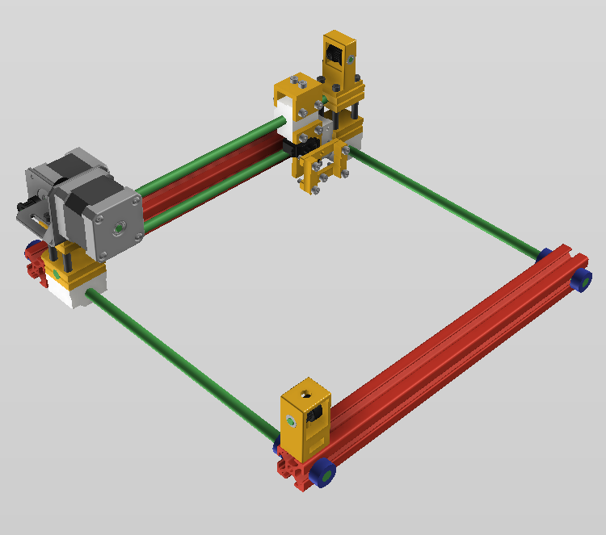
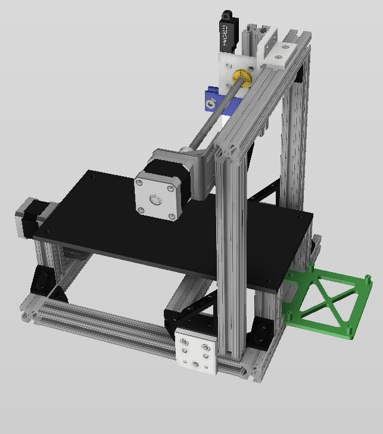
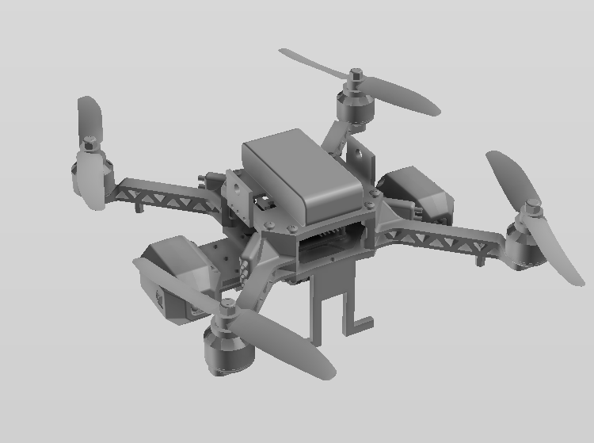

These are my most accomplished professional
projects.

XYZ-Plot Bot
A plotting-bot that uses a combination of stepper motors,
coordinate inputs, and original-3D printed gear boxes to make precise plots on a 2D grid. Uses span grid
architecture, mapping functionalities, and architecture design.

ScanCoustic
An original scanner designed to use linear servos, stepper
motors, a raspberry pi and oscilloscopes to get perfect 3D scans of objects. Scans are then converted
to CAD and inputted into Lulzbot 3D printer for object printing.

Pri-Mo-I Coptor
A quadcopter designed with both autonomous and manual flight
functionalities via original mission control program. Outfitted with two LED search lights and onboard
GPS/HD camera. Uses include aerial and undergound terrain monitoring.
TOXXIC is a social media platform designed using Cloud Computing, Full
Stack-Development, and Machine Learning techniques. It gives users all functionalities of a traditional social
medai platform (making posts, writing comments, likes/dislikes etc.). In addition, the platform gives users the
ability to vote out certain users by publicly voting for or against their individual posts.